Topologi
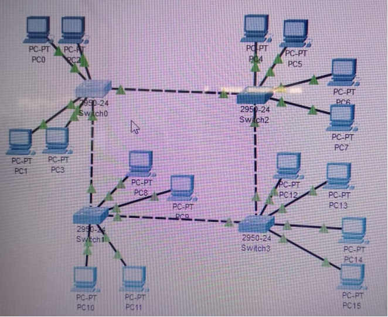Tujuan
VLAN bertujuan untuk membagi jaringan fisik menjadi beberapa domain siaran.
Sehingga dapat meningkatkan kinerja jaringan, menghubungkan beberapa jenis LAN, dan juga membuat keamanan jaringan
1:mengetahui apa itu Vlan
2.mengetahui bagaimana konfigurasi Vlan
3.mengetahui bagaimana cara mengelompokkan jaringan dengan Vlan
VLAN menghubungakan semua perangkat komputer dalam lebih dari satu LAN.
VLAN menyediakan akses tautan data ke semua host komputer yang terhubung ke switch dan diberi ID yang sama.
VLAN membuat domain broadcastnya sendiri, memisahkan jaringan fisik yang ada menjadi beberapa jaringan logis.
Ringkasan
VLAN bertujuan untuk membagi jaringan fisik menjadi beberapa domain siaran, sehingga dapat meningkatkan kinerja jaringan, menghubungkan beberapa jenis LAN, dan meningkatkan keamanan jaringan.
Apa itu VLAN?
VLAN menghubungkan semua perangkat komputer dalam lebih dari satu LAN. VLAN menyediakan akses tautan data ke semua host komputer yang terhubung ke switch dan diberi ID yang sama. VLAN membuat domain broadcast-nya sendiri, memisahkan jaringan fisik yang ada menjadi beberapa jaringan logis.
Konfigurasi VLAN
1. Persiapan Perangkat
- Gunakan 4 Switch 2950-24.
- Gunakan 16 PC Generic.
- Hubungkan 4 PC dengan 1 switch, masing-masing menggunakan kabel Copper Straight-Through.
- Hubungkan ke-4 switch dengan kabel Copper Cross-Over.
2. Penetapan Alamat IP
Sekarang, mulai setting masing-masing IP PC. Klik PC => Desktop => IP Configuration.
 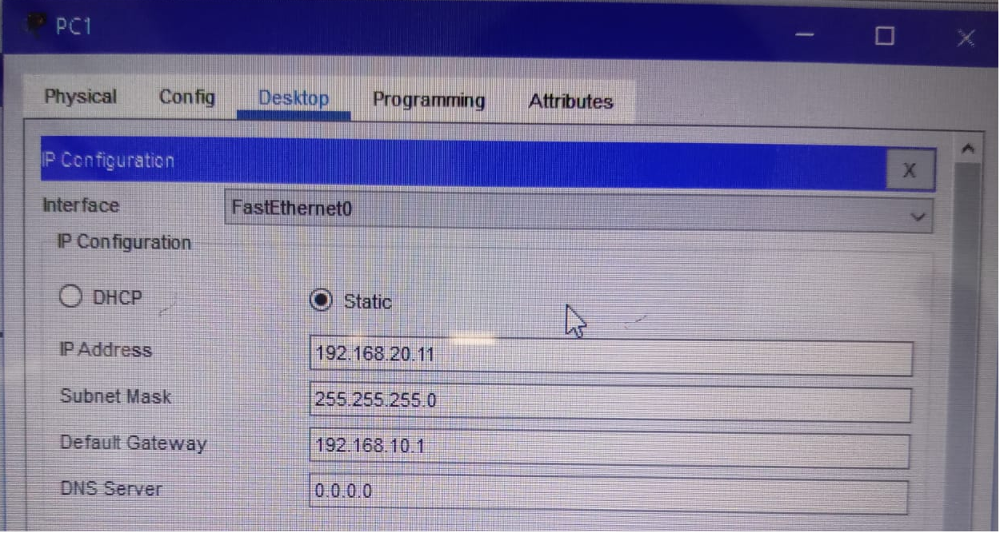
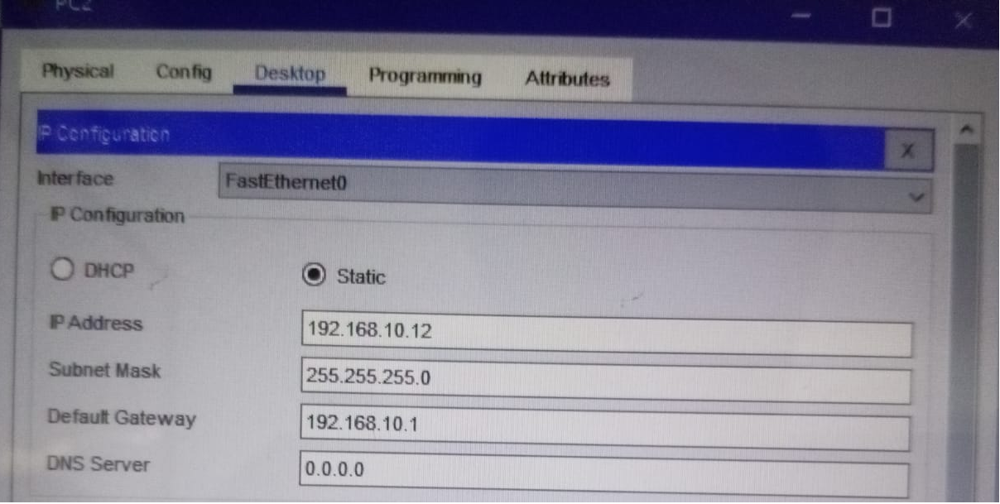
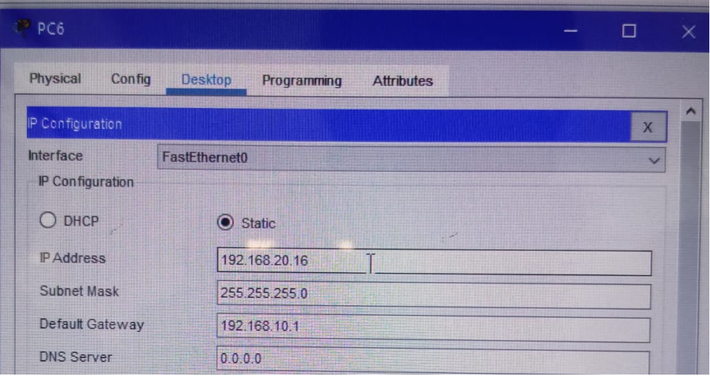
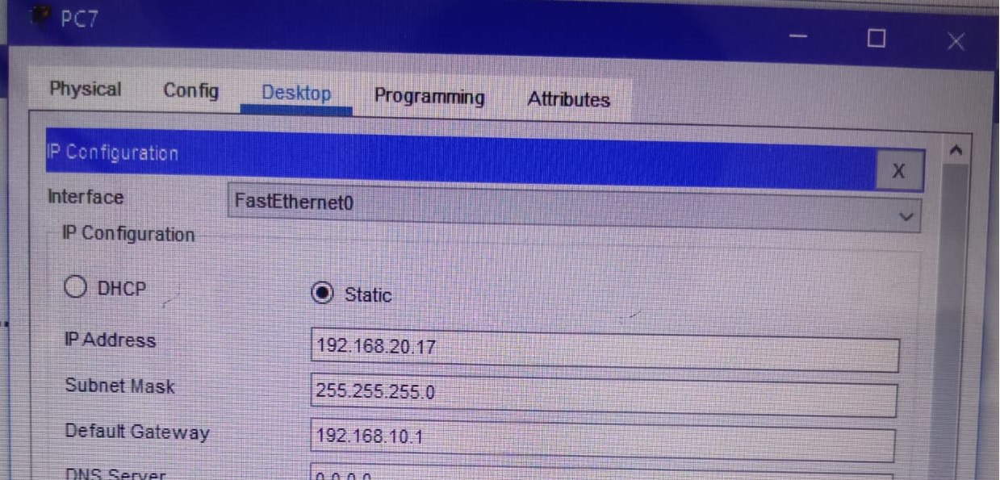
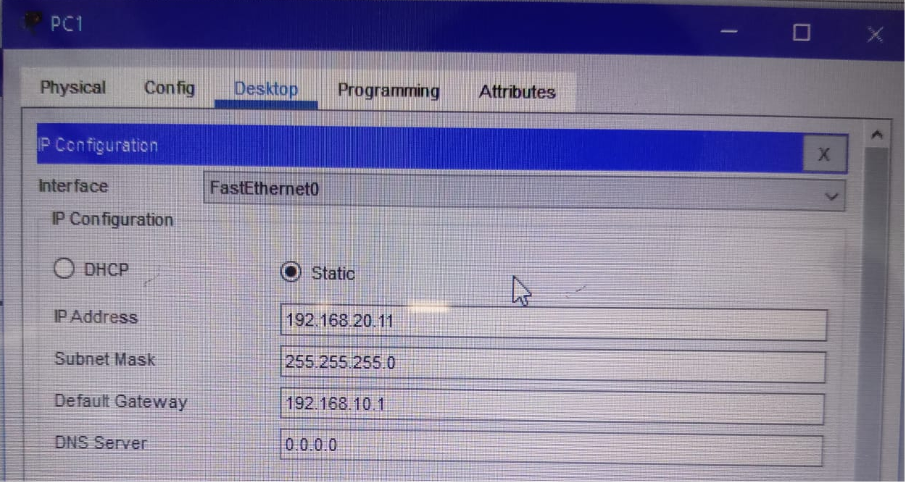
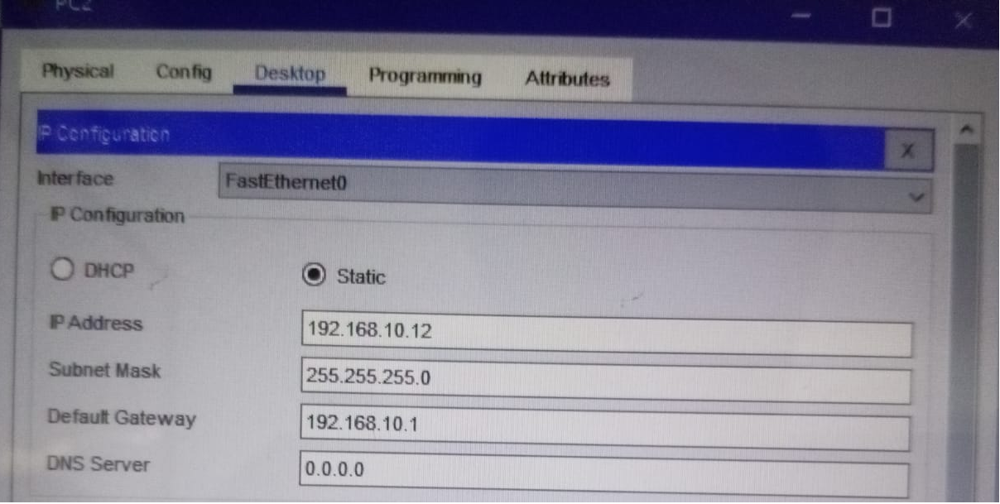
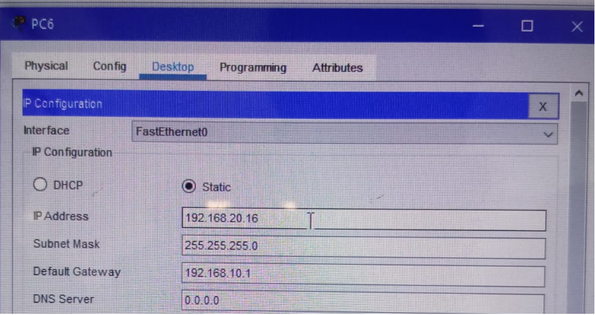
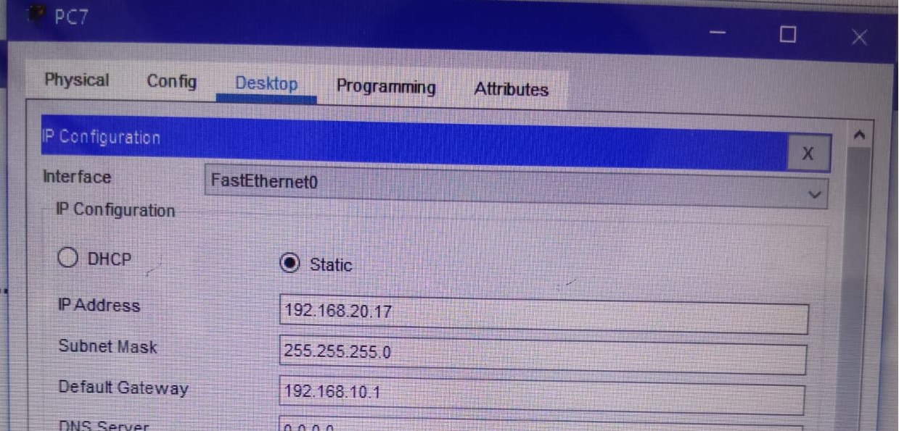
3. Pembuatan VLAN pada Switch
Buat VLAN 10 dan VLAN 20 di masing-masing switch.
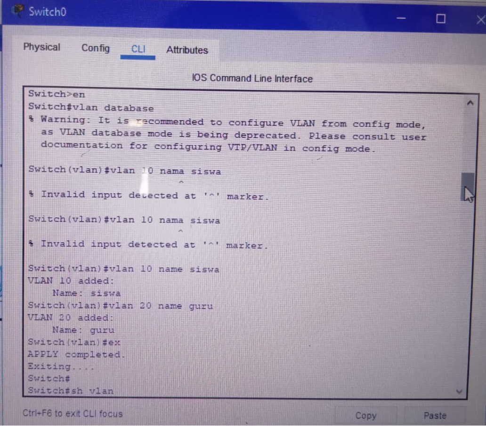4. Verifikasi VLAN
Verifikasi bahwa VLAN yang sudah dibuat telah tercatat di tabel VLAN pada switch.


5. Menetapkan Port ke VLAN
Masukkan port-port yang relevan sebagai anggota masing-masing VLAN (VLAN 10 atau VLAN 20).

6. Pengujian Konektivitas
Lakukan ping pada perangkat dalam VLAN yang sama; koneksi akan reply. Jika antar VLAN berbeda tanpa routing, maka akan time out.

 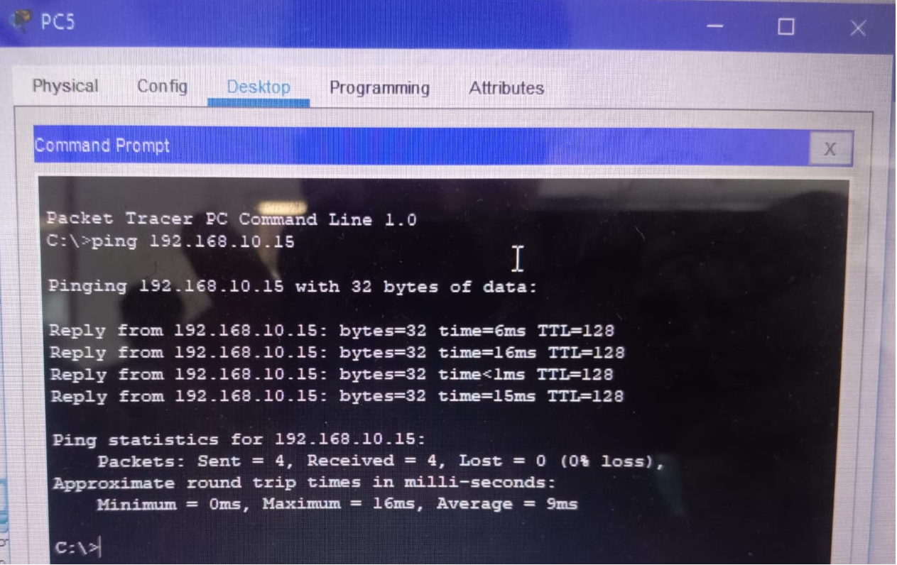
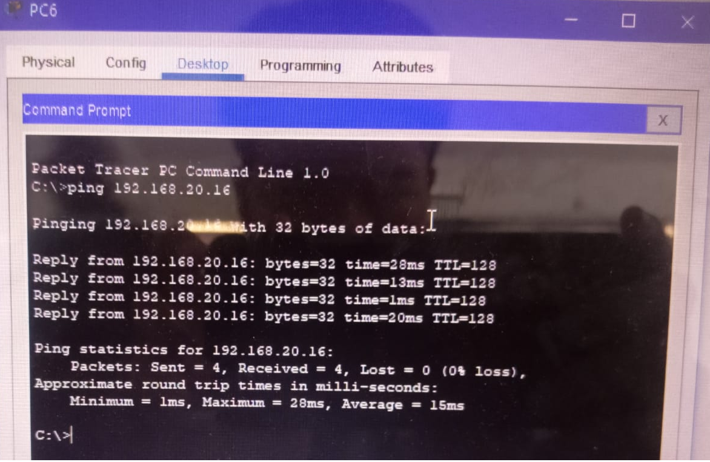
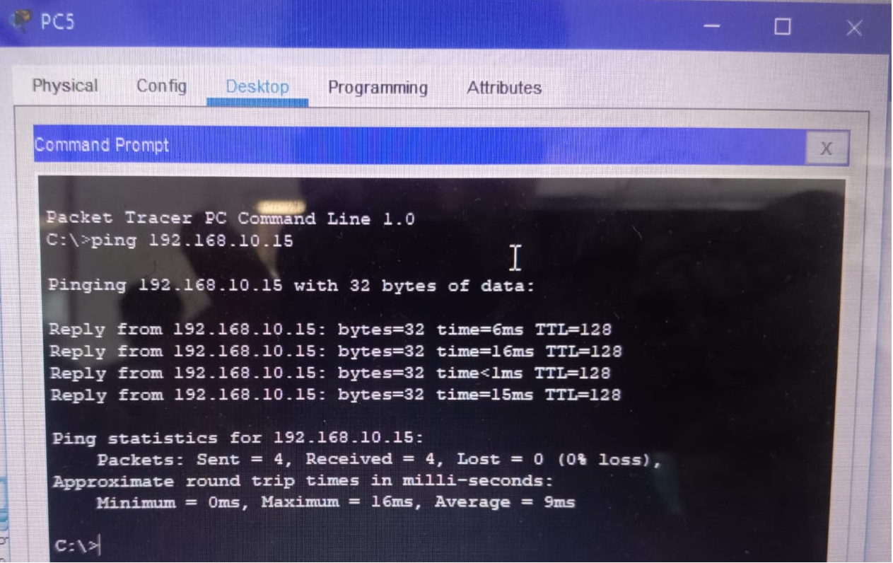
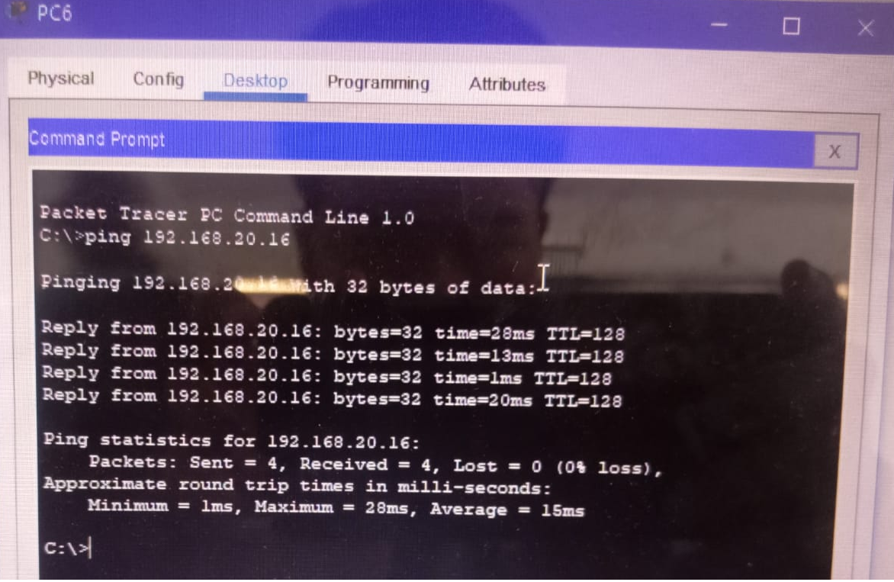
7. Konfigurasi VLAN 20
Lakukan langkah konfigurasi yang sama untuk VLAN 20 sesuai kebutuhan topologi.


Kesimpulan
VLAN berfungsi sebagai pengelompokan jaringan.
Penggunaan VLAN juga dapat menjaga informasi yang tidak seharusnya dilihat oleh kelompok lain, sehingga informasi tetap aman.
VLAN menjadi solusi atas lambatnya penyampaian pesan saat jaringan semakin besar; dengan VLAN, penyampaian pesan menjadi lebih efisien.